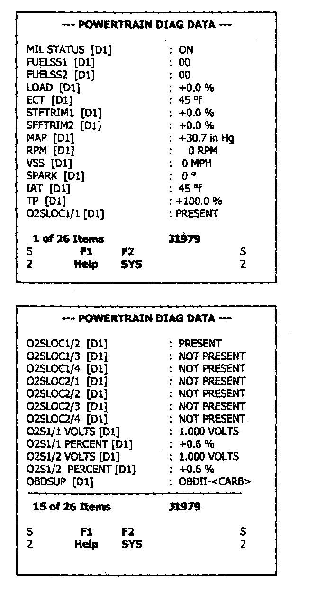

1. Powertrain Diagnostic Data

MODE I - Request Current Powertrain Data
Functional Description - The purpose of this mode is to allow access to current emission-related data values including analog inputs and outputs, digital inputs and outputs, system status information, and calculated parameter values. The request for information includes a parameter identification (PID) value that indicates to the on-board system the specific information requested. The on-board module will respond to this message by transmitting a module ID (e.g. [D1]) the module responding, and the requested data value last determined by the system. All data values returned for sensor readings will be "actual" readings, not default or substitute values used by the system because of a fault with that sensor.